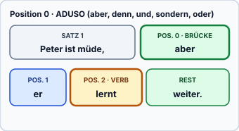

Coordinating Conjunctions (Position 0)
Learn with an AI tutor
An AI tutor explains this page to you and helps you with the exercises. Choose your assistant:
Open with Claude Open with ChatGPT Open with Mistral Vibe
You use your own account with the provider. The assistant is not offered by lernapps.net: lernapps only provides the content and the exercises. The choice holds for all pages, on this device only.
The Position-0 Bridge Between Two Clauses
Sam writes a message home about his first week in Lindenberg. With five small connecting words (aber, denn, und, sondern, oder — short ADUSO), he links two main clauses without changing word order.

© CC0-1.0ADUSO conjunctions sit in Position 0 — after them, Position 1 + Position 2 start fresh as normal.
Exercise
Solution
Sam lernt viel, denn er wohnt jetzt in Lindenberg. right answer
Correct: denn stands in Position 0, so er stays in Position 1 and wohnt stays in Position 2.
Sam lernt viel, denn wohnt er jetzt in Lindenberg.
denn does not count as Position 1 — there is no subject-verb inversion!
Sam lernt viel, denn er jetzt in Lindenberg wohnt.
Verb-final word order happens with weil (subordinate clause), not with denn.
Remember the acronym ADUSO: aber, denn, und, sondern, oder. All five sit in Position 0 and leave Position 1 and Position 2 untouched.
The Five ADUSO Conjunctions at a Glance
| Word (Pos. 0) | Meaning & Comma | Example |
|---|---|---|
| A · aber | but (contrast, with comma) | Deutsch ist schwer, aber es macht Spaß. |
| D · denn | because (reason, with comma) | Ich bleibe hier, denn ich bin müde. |
| U · und | and (addition, no comma needed) | Lukas liest und Mina spielt Fußball. |
| S · sondern | but rather (after nicht/kein, with comma) | Sam kommt nicht aus London, sondern er kommt aus Boston. |
| O · oder | or (choice, no comma needed) | Trinkst du Tee oder möchtest du Wasser? |
aber vs. sondern
Use sondern only when the first clause has a negation (nicht / kein) and the second directly corrects it (not A, but rather B). Otherwise use aber.
Practice
Exercise
Choose the right Position-0 conjunction for each sentence.
- Sam does not live in Berlin, but rather he lives in Lindenberg. → Sam wohnt nicht in Berlin, … er wohnt in Lindenberg.
- We take the bus, because it is raining today. → Wir nehmen den Bus, … es regnet heute.
- The room is small, but it is very bright. → Das Zimmer ist klein, … es ist sehr hell.
- Are we going to the cinema or are we staying at home? → Gehen wir ins Kino … bleiben wir zu Hause?
Solution
- Sam wohnt nicht in Berlin, sondern er wohnt in Lindenberg.
- Wir nehmen den Bus, denn es regnet heute.
- Das Zimmer ist klein, aber es ist sehr hell.
- Gehen wir ins Kino oder bleiben wir zu Hause?
sondern corrects a negation (not A, but rather B), denn gives a reason, aber expresses contrast, and oder offers a choice.
Exercise
Connect the sentences in German with the given ADUSO word. Keep Position-2 word order!
- Mina plays soccer and Lukas reads a book. (und)
- Sam is tired, because he gets up early. (denn)
Solution
- Mina spielt Fußball und Lukas liest ein Buch.
- Sam ist müde, denn er steht früh auf.
You made it! You now have the complete A1 foundation for German verbs and main clauses: conjugation, verb-second order, questions, imperatives, sentence brackets, and ADUSO bridges.
Found a mistake or have an idea for this app?